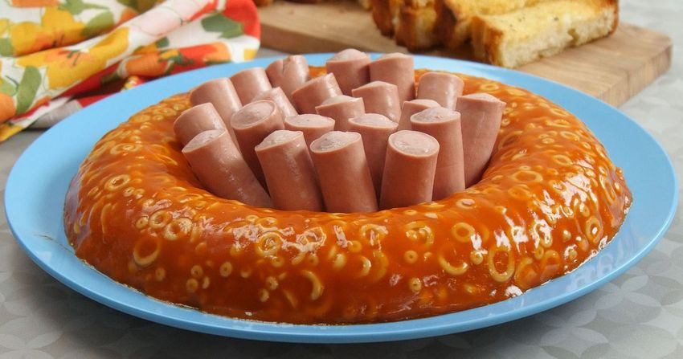

Spaghetti-O Jell-O

Description
Sometimes it's fun just to see what you can make using Jell-O! Is this dish a winner? Well, you're going to have to try it for yourself to find out!
We made this giant Jell-O ring using everyone's childhood favorite - Spaghetti-Os! The flavor is exactly as you remember, only it's cold instead of piping hot. Serve it with some Vienna sausages, hot dogs and sliced bread for a unique twist on an American classic. Enjoy!
Ingredients
- ¼ cup water
- ¼ cup condensed tomato soup
- 2 (¼ ounce) packets unflavored gelatin
- 2 cans Spaghetti-Os
Directions
- In a large pot, pour in your water and condensed tomato soup, then sprinkle the gelatin on top. Allow gelatin to bloom in the water, about 5-10 minutes.
- Once gelatin has bloomed, stir together lightly.
- Place the pot on the stove and turn the heat to medium, then keep stirring occasionally until the gelatin has completely dissolved, and the mixture is quite smooth.
- Turn off the heat and add the Spaghetti-Os to the pot. Mix until well-combined, then pour evenly into 4 cup ring mold.
- Refrigerat mold for 4 hours or overnight.
- When ready to serve, loosen mold by placing in a bowl of warm water, then invert onto a plate. Serve with vienna sausages.